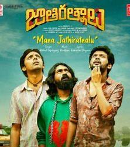

PLACES TO VISIT
KERALA
I visited kerala in january, 2019
Kerala is a state on the southwestern Malabar Coast of India. It was formed on 1 November 1956, following the passage of the States Reorganisation Act, by combining Malayalam-speaking regions of the erstwhile states of Travancore-Cochin and Madras. Spread over 38,863 km (15,005 sq mi), Kerala is the twenty-first largest Indian state by area.
MOVIE REVIEWS
JAATHIRATHNALU

It was a good movie, must watch
The plot revolves around the three prisoners. They get released and plan for a happy life outside. Things take a new turn and bring in a twist. Can they find happiness and love now?